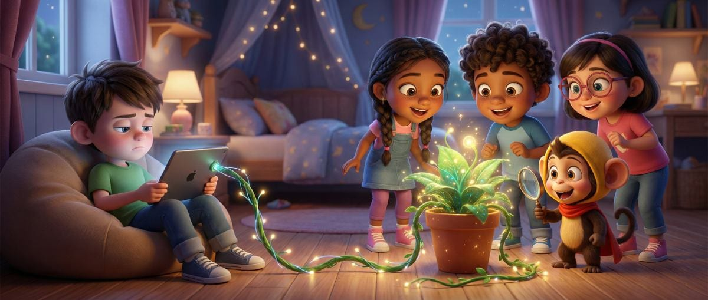

Meet the thinking superhero designed to turn every "what" into a powerful "why". A friendly buddy for kids on a mission to wonder, ask, and discover.
Meet Gulsabi — the world's first thinking superhero built for the next generation. He doesn't punch villains or fly through skies. Instead, he wields the one weapon that changes everything: a question.
Armed with endless curiosity and a bright yellow cape, Gulsabi is on a mission to turn every child on the planet into a fearless thinker — one "But WHY?" at a time.
The space between passive watching and active wondering — that's where Gulsabi lives.

Every Gulsabi episode ends with a challenge — not an answer. Kids don't just watch; they wonder, experiment, and discover on their own.
Stories built around everyday curiosities — rain, shadows, bridges, bees — that every child anywhere instantly connects with.
A 5-year-old asking "why does rain fall?" carries the same spark that lights up scientists, inventors and changemakers.
Our mission: move children from asking "what is it?" to asking "why does it exist?"
The same curious buddy, two superpowers to fit the moment.
The curious companion. Gulsabi sits beside your child, explores the world together and whispers the best question in every situation: "Hey — but WHY?"
The logical leader. Cape on, brain activated. In Super Mode, Gulsabi tackles real puzzles — from "why is the sky blue?" to "how do bridges stand?" — turning every question into a mini-adventure.
The goal of education is not to fill a bucket, but to light a fire — and Gulsabi is the spark.
Every screen-minute should build a child's cognitive capital. We're here to raise a generation of visionaries, not just viewers.
Gulsabi doesn't live in just one screen — he's everywhere your child learns and grows.
From binge-worthy YouTube episodes to hands-on activity kits you build together at the dinner table, the Gulsabi universe is a complete curiosity ecosystem for families around the world.
High-quality YouTube adventures & shorts.
Logic-based brain-training games & apps.
Hands-on educational activity kits.